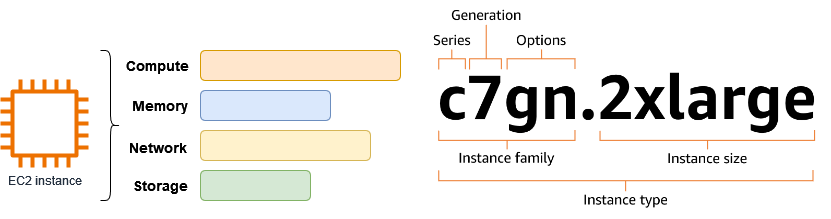

CFGS - Desarrollo de Aplicaciones Web
s

Introducción
file:///C:/Users/titan/Documents/Javier128/Eclipse/AWS/Arqui%20y%20despliegues%20en%20AWS/Tema%203/Tema%203.%20NAT%20Gateway,%20reglas%20encadenadas%20y%20subredes%20privadas.pdf
Tarea 2:
lo mismo con una subred privada. Acceder por ssh a la instancia y comprobar su dirección ip privada.
hablar de los nat para permitir a las ec2 de las subredes privadas poder acceder a inet sin tener ipv4 pública.
Cuando lanzas una instancia EC2 con acceso a Internet, AWS puede darle automáticamente una IP pública dinámica.
- Problema: si la instancia se detiene y vuelve a iniciarse, esa IP cambia.
- Solución: si necesitas una IP que no cambie (para DNS, aplicaciones críticas, accesos seguros, etc.), usas una Elastic IP.
⚙️ Funcionamiento básico
-
Asignación
-
Pides una IP elástica desde la consola de AWS (o vía CLI/API).
-
AWS te reserva una dirección IPv4 pública.
-
Asociación
-
La puedes asociar a:
- Una instancia EC2.
- Una interfaz de red (ENI).
- Un NAT Gateway.
-
Reasignación
-
Si tu instancia falla, puedes reasignar la IP a otra instancia en cuestión de segundos, sin necesidad de cambiar DNS o configuraciones externas.
üí° Caracter√≠sticas importantes
- Gratis solo si está en uso: AWS no cobra por una IP elástica que esté asociada a una instancia en ejecución. Pero si la reservas y no la usas, sí genera coste (para evitar desperdicio de direcciones IPv4).
- Son solo IPv4. En IPv6 no hacen falta porque las direcciones son abundantes y estables.
- Una cuenta AWS tiene un límite predeterminado de EIPs (normalmente 5 por región), aunque puedes pedir aumento.
üéØ Ejemplo práctico
Imagina que tienes una aplicación en una instancia EC2:
- Si solo usas la IP pública automática y la instancia se reinicia → la IP cambia → tus usuarios no podrán conectarse si la tenían guardada.
- Si usas una Elastic IP → la IP se mantiene siempre igual, aunque detengas, reinicies o reemplaces la máquina.
üëâ En resumen: Una Elastic IP en AWS es como tener una direcci√≥n fija en Internet para tus recursos, lo que te da estabilidad y flexibilidad en caso de fallos o cambios en la infraestructura.
https://www.youtube.com/watch?v=DSkO0ZJ8PxA
https://www.youtube.com/watch?v=lTUUJBa1dp4&list=PLDbrnXa6SAzV0J3Un9jRnbbFpuQH-_y-C&index=11
https://www.youtube.com/watch?v=iAYYssYrGms
https://www.youtube.com/watch?v=CGmTvukObOw
Enlaces de interés
Documentación de AWS. Instancias EC2. Tipos de instancias EC2. Controlar el tráfico hacia los recursos de AWS mediante grupos de seguridad. Grupos de seguridad de instancias EC2. Control del tráfico de la subred con listas de control de acceso a la red Tipos y caracteristicas de AMI en Amazon EC2